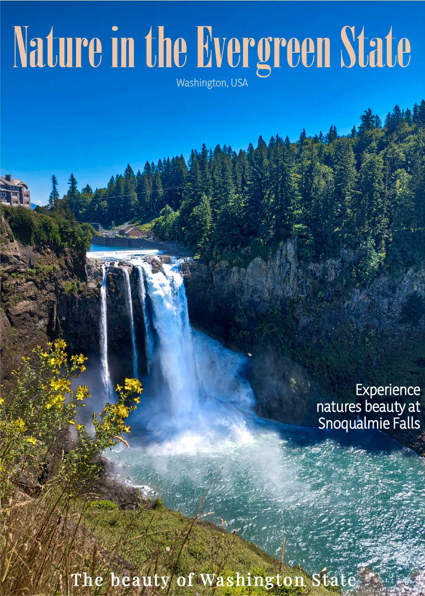

Fictional Promo Post / Magazine cover
From looking at different travel magazines and social media posts from travel agencies, you can see multiple posts that promote an area in the world. Here I have taken a photo that I took over the summer and edited it in Adobe Lightroom. Then turned it into a promotional post/cover in Adobe Illustrator by using fonts that work well together and placement while still letting the location shine, to inspire other nature lovers to visit.

Digital Design
From looking at different travel magazines and social media posts from travel agencies, you can see multiple posts that promote an area in the world. Here I have taken a photo that I took over the summer and edited it in Adobe Lightroom. Then turned it into a promotional post/cover in Adobe Illustrator by using fonts that work well together and placement while still letting the location shine, to inspire other nature lovers to visit.